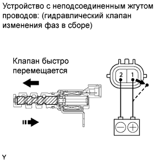

DTC P0016 Зависимость между положениями коленчатого вала и распредвала (датчик A, ряд 1) |
| № DTC | Условие обнаружения DTC | Неисправный участок |
| P0016 | Отклонение в сигнале датчика положения коленчатого вала и сигнале датчика положения распредвала (ряд 1) (логика диагностирования за 2 поездки). |
|
| 1.ПРОВЕРЬТЕ, НЕ ВЫВОДЯТСЯ ЛИ ДРУГИЕ DTC (ПОМИМО DTC P0016) |
Подсоедините портативный диагностический прибор к DLC3.
Установите замок зажигания в положение ON (ВКЛ).
Включите портативный диагностический прибор.
Войдите в следующие меню: Powertrain / Engine and ECT / DTC.
Удалите коды DTC.
| Результат | Следующий шаг |
| DTC P0016 выводится | А |
| DTC P0016 и другие DTC выводятся | B |
|
| ||||
| А | |
| 2.ВЫПОЛНИТЕ ДИАГНОСТИКУ В РЕЖИМЕ ACTIVE TEST С ПОМОЩЬЮ ПОРТАТИВНОГО ДИАГНОСТИЧЕСКОГО ПРИБОРА (УПРАВЛЕНИЕ ГИДРАВЛИЧЕСКИМ КЛАПАНОМ ИЗМЕНЕНИЯ ФАЗ) |
Подсоедините портативный диагностический прибор к DLC3.
Запустите двигатель.
Включите портативный диагностический прибор.
Войдите в следующие меню: Powertrain / Engine and ECT / Active Test / Control the VVT System (Bank 1).
Проверьте частоту вращения коленчатого вала двигателя, управляя гидравлическим клапаном изменения фаз с помощью портативного диагностического прибора при условии, что температура охлаждающей жидкости двигателя не превышает 50°C (122°F).
| Режим работы прибора | Заданные условия |
| Гидравлический клапан изменения фаз выключен | Нормальная частота вращения коленчатого вала двигателя |
| Гидравлический клапан изменения фаз включен | Двигатель глохнет или неравномерно работает на холостом ходу сразу после переключения гидравлического клапана изменения фаз из выключенного состояния во включенное |
|
| ||||
| OK | |
| 3.ПРОВЕРЬТЕ, ВОЗОБНОВЛЯЕТСЯ ЛИ ВЫВОД DTC (DTC P0016) |
Подсоедините портативный диагностический прибор к DLC3.
Установите замок зажигания в положение ON (ВКЛ).
Включите портативный диагностический прибор.
Сбросьте коды DTC (Нажмите здесь).
Запустите и прогрейте двигатель.
Переключите ECM из нормального режима диагностики в режим активной диагностики посредством портативного диагностического прибора (Нажмите здесь).
Дайте двигателю поработать на холостом ходу в течение 1 мин.
Совершите поездку на автомобиле в течение более 10 минут.
Войдите в следующие меню: Powertrain / Engine and ECT / DTC.
Считайте коды DTC.
| Результат | Следующий шаг |
| DTC не выводится | А |
| DTC P0016 выводится | B |
|
| ||||
| А | ||
| ||
| 4.ПРОВЕРЬТЕ ГИДРАВЛИЧЕСКИЙ КЛАПАН ИЗМЕНЕНИЯ ФАЗ В СБОРЕ |
Проверьте гидравлический клапан изменения фаз в сборе (Нажмите здесь).
|  |
Подсоедините положительный (+) вывод аккумуляторной батареи к контакту 1, а отрицательный (-) вывод – к контакту 2. Проверьте работу клапана.
Установите гидравлический клапан изменения фаз в сборе.
|
| ||||
| OK | |
| 5.ПРОВЕРЬТЕ ЗУБЧАТОЕ КОЛЕСО РАСПРЕДВАЛА В СБОРЕ |
Проверьте зубчатое колесо распредвала в сборе (Нажмите здесь).
|
| ||||
| OK | |
| 6.ПРОВЕРЬТЕ ФИЛЬТР ГИДРАВЛИЧЕСКОГО КЛАПАНА ИЗМЕНЕНИЯ ФАЗ |
Снимите фильтр гидравлического клапана изменения фаз.
Убедитесь в том, что фильтр не засорен.
Установите фильтр гидравлического клапана изменения фаз.
|
| ||||
| OK | |
| 7.ОТРЕГУЛИРУЙТЕ ФАЗЫ ГАЗОРАСПРЕДЕЛЕНИЯ |
| ДАЛЕЕ | |
| 8.ПРОВЕРЬТЕ, ВОЗОБНОВЛЯЕТСЯ ЛИ ВЫВОД DTC (DTC P0016) |
Подсоедините портативный диагностический прибор к DLC3.
Установите замок зажигания в положение ON (ВКЛ).
Включите портативный диагностический прибор.
Сбросьте коды DTC (Нажмите здесь).
Запустите и прогрейте двигатель.
Переключите ECM из нормального режима диагностики в режим активной диагностики посредством портативного диагностического прибора (Нажмите здесь).
Дайте двигателю поработать на холостом ходу в течение 1 мин.
Совершите поездку на автомобиле в течение более 10 минут.
Войдите в следующие меню: Powertrain / Engine and ECT / DTC.
Считайте коды DTC.
| Результат | Следующий шаг |
| DTC не выводится | А |
| DTC P0016 выводится | B |
|
| ||||
| А | ||
| ||